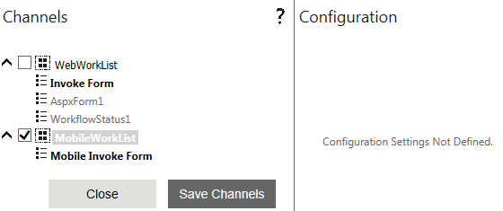

No
Delivery Channels - MobileWorkList
In order to deliver the work items to the mobile device, the MobileWorkList option in the Delivery Channel property needs to be selected. This allows mobile users to view and act upon the tasks from the Inbox that is rendered on their mobile devices.
This topic describes the steps required to configure the MobileWorkList option in the Delivery Channel property of the Invoke Form activity.
Configuring 'MobileWorkList' option in the Delivery Channels Property:
- In the Process Designer, drag and drop the Invoke Form activity on to the design area. The activity properties pane of the selected activity appears on the right side of the design area.
- In the Activity Properties pane, expand the Configuration node and select the Delivery Channels property.
- In the Delivery Channels window, select the MobileWorkList check box in the Channels section.

- Click Save Channels.
- Set all the other properties and click Publish and Test Run.